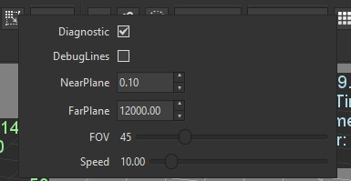

Goal
Within this recipe you will learn how to enable the diagnostic mode in your games when you need to measure things while you are developing.
Hands-on
With Wave Visual Editor
On the editor you can enable this mode by checking the button Diagnostic on the camera options:

With Visual Studio (for Windows or Mac)
You just need create an empty new project in Visual Wave Editor, and switch to Visual Studio or Xamarin Studio by clicking on File > Open C# Solution...
To activate the diagnostic mode you need to add this line of code: You can see and example in Lines sample
...
protected override void CreateScene()
{
base.CreateScene();
WaveServices.ScreenContextManager.SetDiagnosticsActive(true);
....
}
Also you need to add the PROFILE conditional compilation symbol to your project.
By doing this, a FPS counter will appear in the upper left corner on the screen. But Wave Engine offers some simple tools to track the information we need. You can add labels for literal content or timers to measure things with the code:
Labels.Add("Life", life.ToString());
Timers.BeginTimer("Load started");
// ToDo something
Timers.EndTimer("Load finished");
Wrap-up
With this very simple tools you can visualize the information you need to see how your game is running.